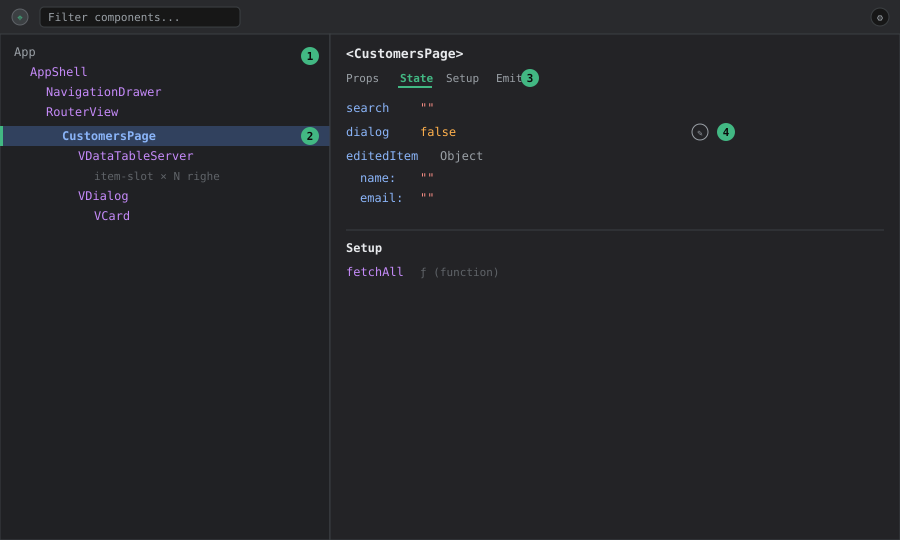

DevTools — Pannello Components
Livello 1 — Base
Il pannello Components mostra l'albero dei componenti Vue montati nella pagina, rispecchiando la gerarchia con cui sono composti nel template (non i file — un componente può comparire più volte se usato più volte, es. ogni riga di una v-data-table-server).
Come aprirlo:
- Avviare il frontend in dev (
pnpm --filter frontend dev). - Aprire i DevTools del browser → tab Vue → sotto-tab Components.
Selezionando un nodo dell'albero, il pannello laterale mostra:
- Props — i valori passati dal genitore, in sola lettura salvo editing esplicito (vedi Livello 2).
- State locale (
ref/reactivedichiarati con<script setup>) — su Tama corrisponde a tutte le variabili reattive definite nel<script setup>di un file.vue, es.search,dialog,editedItemin una pagina lista. - Setup — le funzioni esposte automaticamente da
<script setup>. - Emits — eventi dichiarati con
defineEmits.
Sopra l'albero c'è un selettore a mirino (icona target): cliccandolo e poi cliccando un elemento nella pagina, DevTools salta direttamente al componente corrispondente nell'albero — utile quando la gerarchia è profonda e non si sa a quale componente appartiene un pezzo di UI.

Come leggere il pannello (mockup illustrativo, non uno screenshot reale — i nomi dei componenti/valori sono presi dal codice Tama):
① Albero componenti, a sinistra: gerarchia annidata così come compare nel template (AppShell → RouterView → pagina → componenti Vuetify figli). I nomi in viola sono componenti, non elementi HTML.
② Nodo selezionato: evidenziato con sfondo blu e bordo verde a sinistra; è quello i cui dettagli compaiono nel pannello di destra — qui CustomersPage.
③ Tab attiva nel pannello destro (sottolineata in verde): Props / State / Setup / Emits. Il contenuto sotto cambia in base alla tab, non mostra tutto insieme.
④ Icona matita accanto a un valore: indica che quel valore è modificabile in place (editing live, vedi Livello 2).
Livello 2 — Intermedio
Workflow tipico su Tama: capire perché una pagina lista non mostra i dati attesi.
Le pagine dati di Tama (pages/data/CustomersPage.vue, AccessoriesPage.vue, ecc.) seguono tutte lo stesso pattern: <script setup> con stato locale (search, dialog, filtri) più un riferimento allo store Pinia del dominio. Aprendo CustomersPage.vue nell'albero Components:
- Nel riquadro State si vede lo stato locale del componente (es.
dialog,editedItem), separato dallo stato dello store (quello si ispeziona nel pannello Pinia, vedi devtools-pinia — è un errore comune cercareitems/loadingqui invece che nello store). - Nel riquadro Setup, la sezione
computedmostra derivati locali se presenti.
Un secondo workflow frequente: verificare quali props arrivano a un componente condiviso. I componenti custom condivisi vivono in components/shared/; selezionandoli nell'albero (magari annidati sotto AppShell.vue → layout → pagina) si vedono le props effettive ricevute in quel punto specifico dell'albero, utile per capire se un valore sbagliato arriva dal genitore o viene calcolato male all'interno.
Editing live delle props/state: cliccando sull'icona matita accanto a un valore nel pannello, si può modificare al volo (es. forzare dialog = true per aprire un dialog senza cliccare il bottone, o cambiare search per testare il filtro senza digitare). La modifica è reattiva e si propaga come se fosse avvenuta da codice — utile per riprodurre rapidamente uno stato UI specifico durante un bug report.
Esempio guidato: ispezionare il form di modifica cliente senza compilare nulla
Scenario: si sta lavorando sul dialog di modifica in una pagina lista e serve verificarne il rendering con dati realistici, senza rifare ogni volta il giro click-riga → click-modifica.
- Aprire
/data/customers, selezionareCustomersPagenell'albero (o usare il mirino puntando la tabella). - Nel riquadro State, individuare le variabili del dialog (es.
dialog,editedItem). - Con la matita, valorizzare
editedItem.namecon una stringa lunga (es. 80 caratteri): serve a testare come il layout del dialog gestisce l'overflow. - Forzare
dialog = true: il dialog si apre con i dati impostati, senza aver toccato la UI. - Bonus: con il dialog aperto, riselezionare col mirino un campo del form per ispezionare il componente Vuetify interno (
VTextField) e verificarne le props effettive (rules,error-messages, ecc.).
Il tutto è volatile: un refresh della pagina riporta ogni valore allo stato reale. È il modo più rapido per rispondere a "come renderizza il form se...?" senza scrivere codice temporaneo.
Livello 3 — Avanzato
"Open in editor": ogni nodo dell'albero ha un pulsante che apre il file .vue sorgente direttamente nell'editor configurato (richiede il plugin Vite ufficiale, già presente via vite-plugin-vuetify/setup standard Vue-Vite). Su un progetto con decine di pagine sotto pages/data/, pages/system/, pages/quotation/, questo evita di cercare manualmente il file quando si parte dall'ispezione visuale.
Debug di componenti dentro v-for: le tabelle di Tama sono quasi sempre v-data-table-server di Vuetify con item-slot custom. Ogni cella custom renderizzata via slot compare nell'albero come istanza separata — selezionando una riga specifica si può ispezionare il valore esatto di item per quella riga, molto più veloce che mettere un console.log dentro lo slot e filtrare l'output per un id specifico.
Componenti "anonimi" o funzionali: i componenti Vuetify (v-dialog, v-form) compaiono nell'albero con il loro nome interno Vuetify, non come parte del markup Tama — utile sapere che se si cerca CustomerDetailPage e non si trova subito, potrebbe essere annidato sotto diversi wrapper Vuetify (v-dialog → v-card → contenuto).
Accesso al componente selezionato dalla console ($vm0): quando un componente è selezionato nell'albero, DevTools lo espone nella console del browser come variabile $vm0. Da lì si accede all'istanza reale: $vm0.search, $vm0.fetchAll(), ecc. È il ponte fra ispezione visuale e sperimentazione da console — utile quando l'editing con la matita non basta (es. chiamare un metodo con argomenti, o ispezionare un valore che il pannello tronca). Nota per i componenti <script setup> di Tama: le variabili del setup non esposte con defineExpose potrebbero non essere raggiungibili direttamente dall'istanza — in quel caso conviene leggere i valori dal pannello State, che invece li vede tutti.
Performance/re-render tracking: attivando l'opzione "Highlight updates on components" (impostazioni del pannello, icona ingranaggio), ogni componente che si ri-renderizza lampeggia nella pagina. Su una pagina lista con watchDebounced (es. CustomersPage.vue, che sincronizza store.search con debounce di 300ms — vedi pages/data/CustomersPage.vue), questo permette di verificare visivamente che il debounce funzioni davvero: la tabella non dovrebbe lampeggiare ad ogni tasto digitato, solo alla fine della pausa di 300ms. Se lampeggia ad ogni carattere, il debounce non sta funzionando come atteso.